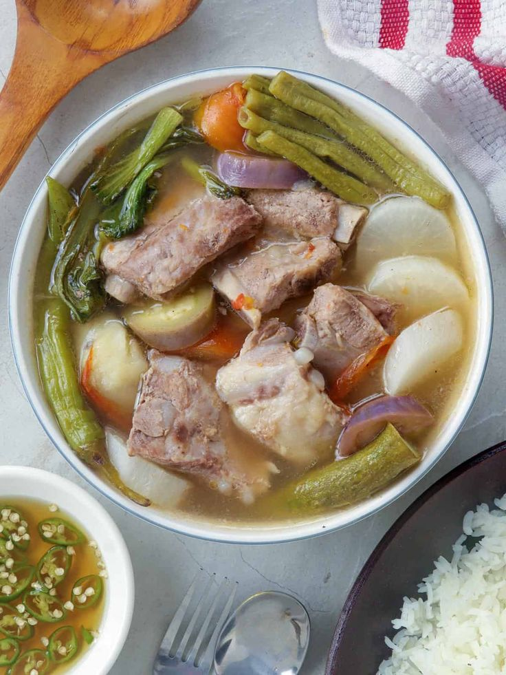

Sinigang na Baboy

Ingredients:
- 1 kg pork belly or ribs
- 1 liter water
- 1 medium onion, sliced
- 2 tomatoes, quartered
- 1 pack tamarind soup mix
- 1 cup radish, sliced
- 1 cup kangkong (water spinach)
- 2 green chili peppers
Steps:
- Boil water in a pot and add pork, onion, and tomatoes. Cook until tender.
- Add the tamarind soup mix and stir well.
- Add radish and simmer for 5 minutes.
- Add kangkong and green chili peppers. Simmer for another 2 minutes.
- Serve hot with steamed rice.